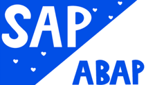

Programmierkenntnisse



Angehende Fachinformatikerin Anwendungsentwicklung
Ich bin eine kreative und motivierte Person und total interessiert an Technologie und Programmierung. Schon früh hatte ich durch meinen Vater, der sein Leben lang als Programmierer arbeitet, Einblicke in die Welt des Codings. Dabei habe ich schnell gemerkt, wie spannend es ist, Probleme mit Code zu lösen und eigene Projekte umzusetzen.
Meine Mischung aus Kreativität und logischem Denken hilft mir dabei, neue Lösungen zu finden und mich in komplexe Aufgaben reinzudenken – genau das macht für mich Programmieren so spannend.
Ich bin in Seattle, Washington aufgewachsen und lebe seit fast fünf Jahren in Deutschland. Wie in meinem Lebenslauf zu sehen ist, habe ich bereits eine Ausbildung gestartet. Dabei konnte ich schon praktische Erfahrungen sammeln, habe mich aber bewusst entschieden, meinen Weg am BSZ Wiesau fortzusetzen, weil dieser besser zu meinen beruflichen Zielen passt.
Jetzt freue ich mich darauf, im Rahmen meines Schulpraktikums noch mehr Praxiserfahrung zu sammeln, mein Wissen weiter auszubauen und aktiv im Unternehmen mitzuarbeiten. Vielen Dank, dass Sie sich die Zeit nehmen, meine Bewerbung zu lesen.

C# Projekt mit Menüsystem und CSV Datein.
Website erstellt mit HTML, CSS und Flexbox.
Eine C#-Anwendung mit WPF erstellt. Die mit einer Datenbank oder CSV Datein, Daten bereit stellt.